Python Content
Unit 1
Description
In this Python unit, I learned the basics of Python and how to code variables and use methods and classes. This laid the foundation for learning much more complex Python coding.
Concepts Learned
- I learned how to make an object appear on the screen
- I learned how to make objects move
- I learned how to make methods that can do simple algorithms
Below are screenshots of the Variable, Math Tricks, and Moving Labs
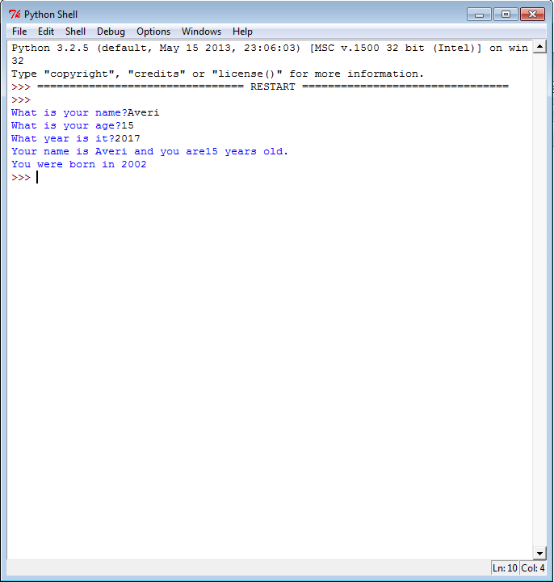 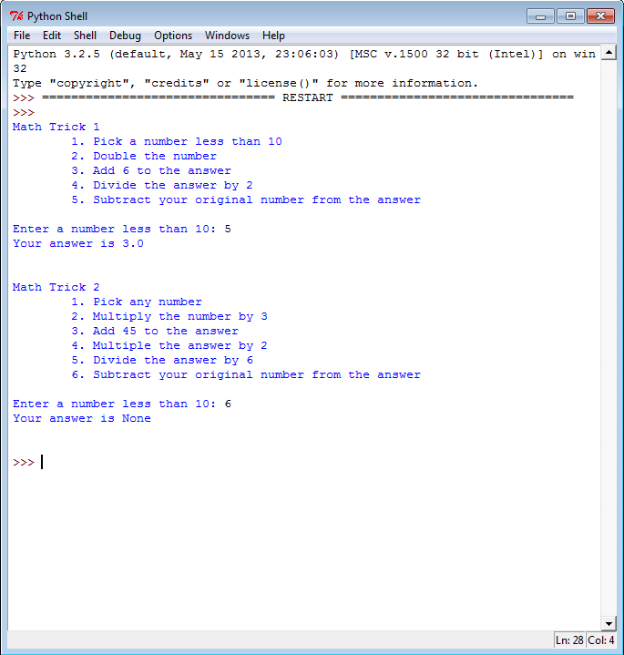 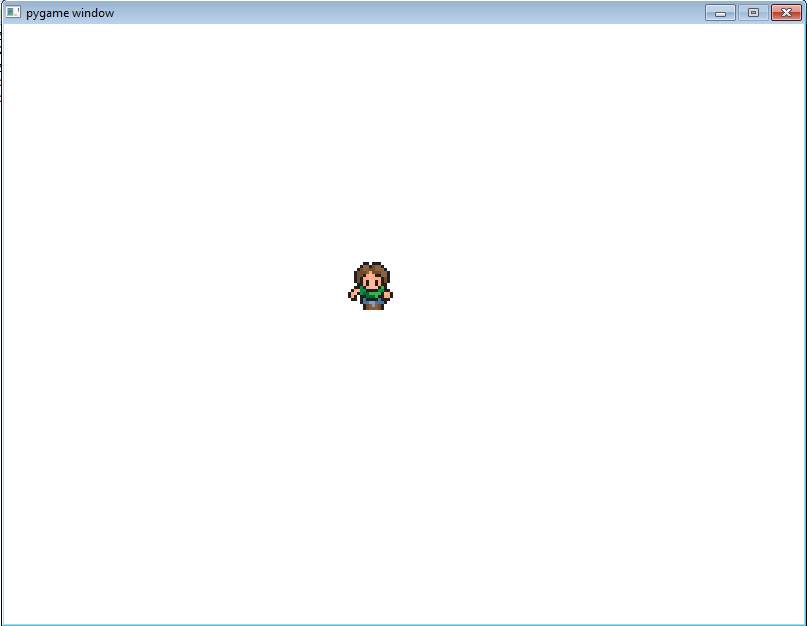
Unit 2
Description
In this Python unit, I learned how to make if statements, if/else statements, and nested if statements. Learning these statements prepared me for learning even more complicated loops.
Concepts Learned
- I learned how to prevent an object from going off the screen
- I learned how to prevent object from running into each other
- I learned how to program an object to "jump"
Below are screenshots of the Don't Walk Off, Collide, and Running Man Labs
 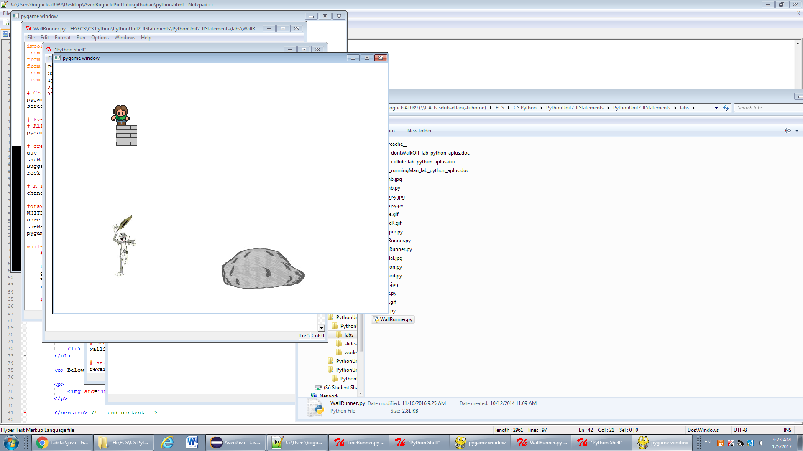
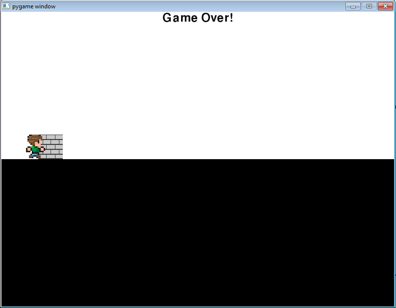
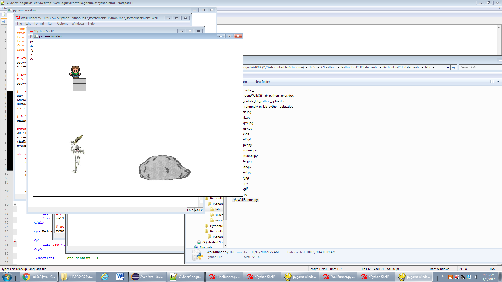
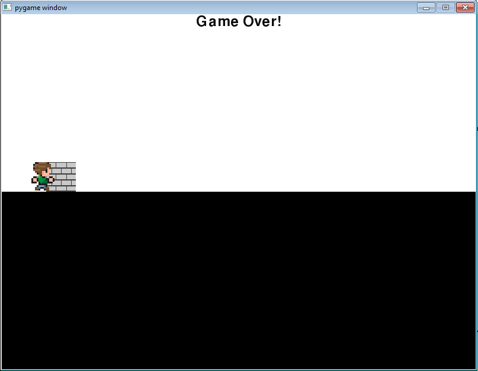
Unit 3
Description
In this Python unit, I learned how to use loops to repeat code, strings, more methods, while loops, variables, and nested loops. This improved my understanding of how loops worked and helped me use more complicated ones.
Concepts Learned
- I learned how to make a timer
- I learned how to create a cipher method
- I learned how to draw multiple shapes using one loop
- I learned how to make a picture the background and how to randomly place objects on the screen
Below are screenshots of the Timer, Caesar Cipher, Squares and Circles, and Tiles Labs.
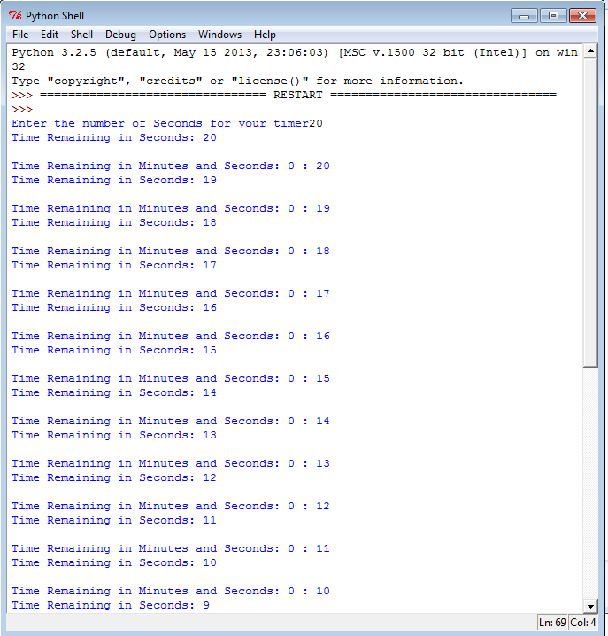 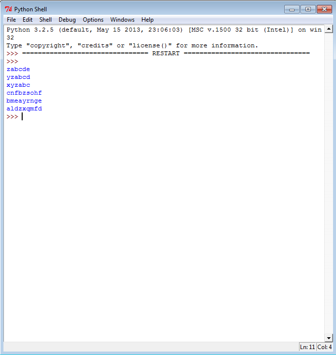 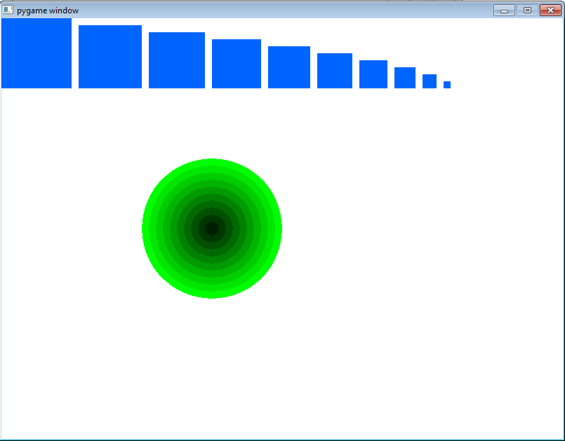 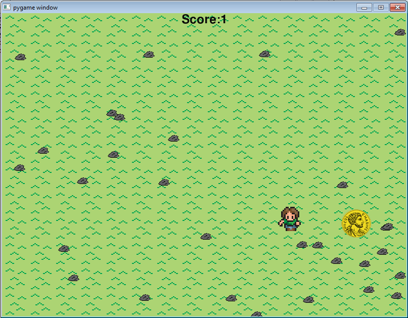
Unit 4
Description
In this Python unit, I learned how to make a list and use lists, loops, and ifs together. This extended my knowledge of Python and led me to do even more complicated code.
Concepts Learned
- I learned how to change a person's image based on the direction they are facing
- I learned how to use different tile to make a background
- I learned how to keep track of where objects are on the screen
Below are screenshots of the Costume Change, Changing Ground, and Dodging Enemies Labs.
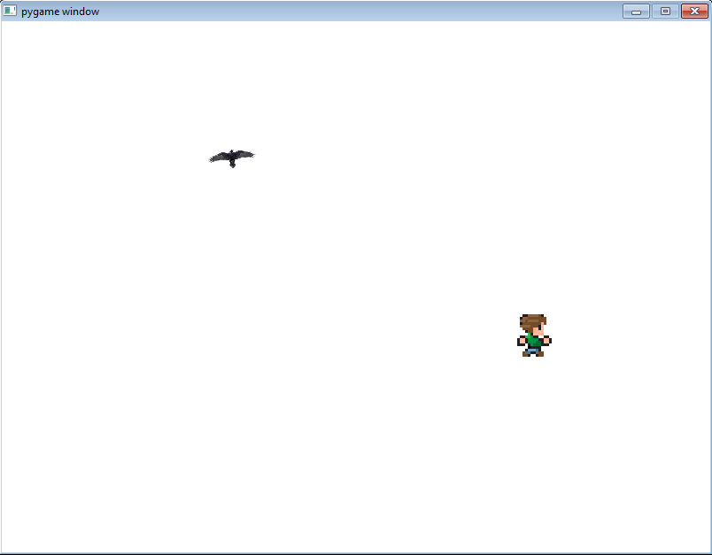 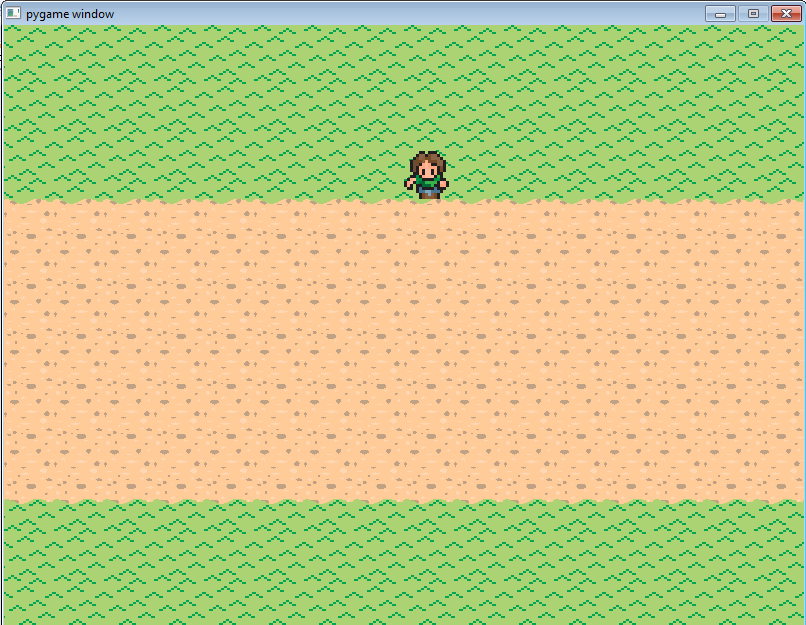 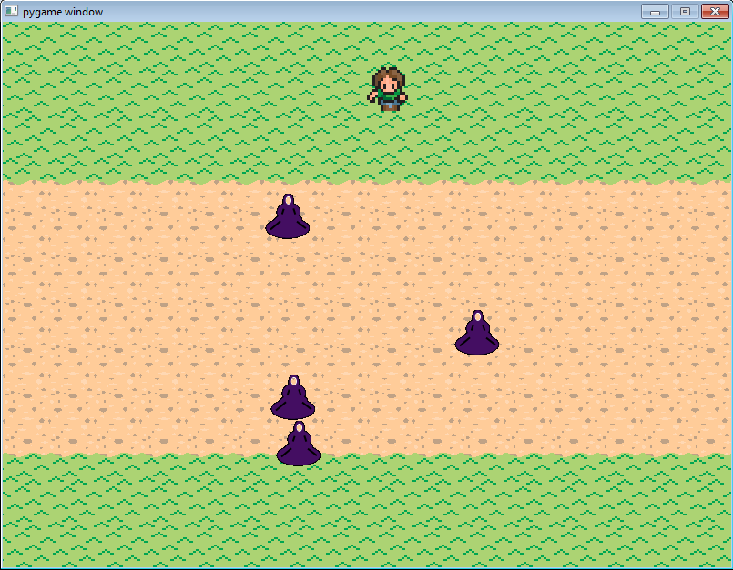
Final Project
Description
In this Python Project, I used all of my knowledge of Python to create a game that was multi-level and had many aspects to it. It truly displays how well I know Python.
Concepts Learned
- I learned that you can't forget anything in code, not even a semicolon, because then your program will not work
- I learned that you can't get frustrated with a program if it doesn't work; you must be patient
Below is a screenshot of my final project
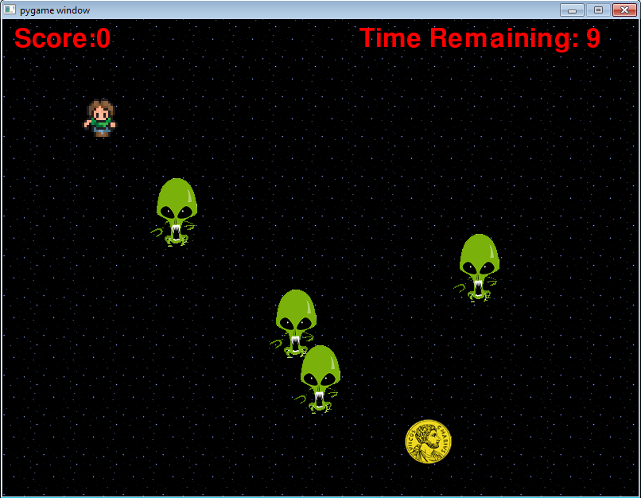